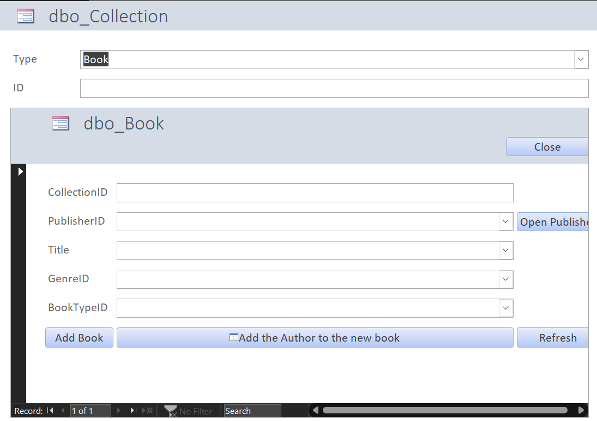

About Me
Jia Hong Shih (343)987-9092 |
shih0010@algonquinlive.com
Education
Computer Programming and Analysis, Algonquin College, Ottawa, ON— Advanced Diploma- Dean’s Honor’s List; GPA 4.0 / 4.0
- Select Coursework: Object Oriented Programming (Java), Operating Systems (Linux, Windows), Database (SQL), Web Programming (HTML, CSS, PHP, JavaScript), Technical Writing
- Academic Excellence Award; GPA 3.88 / 4.0
- Relevant Select Coursework: Statistics (R), Political Science Methodology (Stata)
Program-Related Skills
- Programming Languages: Java, PHP, JavaScript, HTML/CSS
- Operating Systems: Windows 11, Ubuntu, Linux, MacOS
- Database Management Systems: PostgreSQL, Microsoft Access, Oracle, Microsoft SQL Server
- Software Tools: Eclipse, Microsoft Office, Parallels, VMWare Fusion, VMWare Workstation, SQL Server Management Studio 2017, MySQL Workbench, R, Stata, XAMPP
Additional Qualifications
- Highly organized, flexible in a changing environment, deadline driven and able to handle multiple tasks effectively.
- Technologically savvy and passionate about technology and solving real-world business challenges.
- Comply with your job's laws, rules, data governance, professional ethics, and industry standards.
- Learning and applying troubleshooting skills and procedures, you can take the lead and carry out diagnostics on a variety of industrial automation controllers, sensors, data-collecting devices, and interfaces.
Academic Projects
Library Database Management System- Design and develop database architecture for information systems projects
- Develop and implement data administration policy, standards and models
-
Write scripts related to stored procedures and triggers
DROP TRIGGER IF EXISTS CheckFineBeforeBorrow; GO CREATE TRIGGER CheckFineBeforeBorrow ON BorrowCollection FOR INSERT AS BEGIN DECLARE @PatronID INT; DECLARE @TotalFine DECIMAL(10, 2); SELECT @PatronID = PatronID FROM inserted; SELECT @TotalFine = SUM(Fine.Amount) FROM Fine INNER JOIN BorrowCollection ON Fine.ID = BorrowCollection.FineID INNER JOIN Patron ON BorrowCollection.PatronID = Patron.ID WHERE Fine.ID IN ( SELECT FineID FROM BorrowCollection WHERE PatronID = @PatronID) GROUP BY Patron.ID; IF @TotalFine > 0 BEGIN DECLARE @ErrorMessage NVARCHAR(100); SET @ErrorMessage = 'Cannot borrow. You have unpaid fine of ' + CONVERT(NVARCHAR(20), @TotalFine) + ' HKD.'; RAISERROR (@ErrorMessage, 16, 1); ROLLBACK TRANSACTION; END END; - Design a simple and easy-to-understand form to simplify the cumbersome data insertion process
- Referencing usage scenarios, establish appropriate triggers and data constraints to enhance usability and reduce error rates